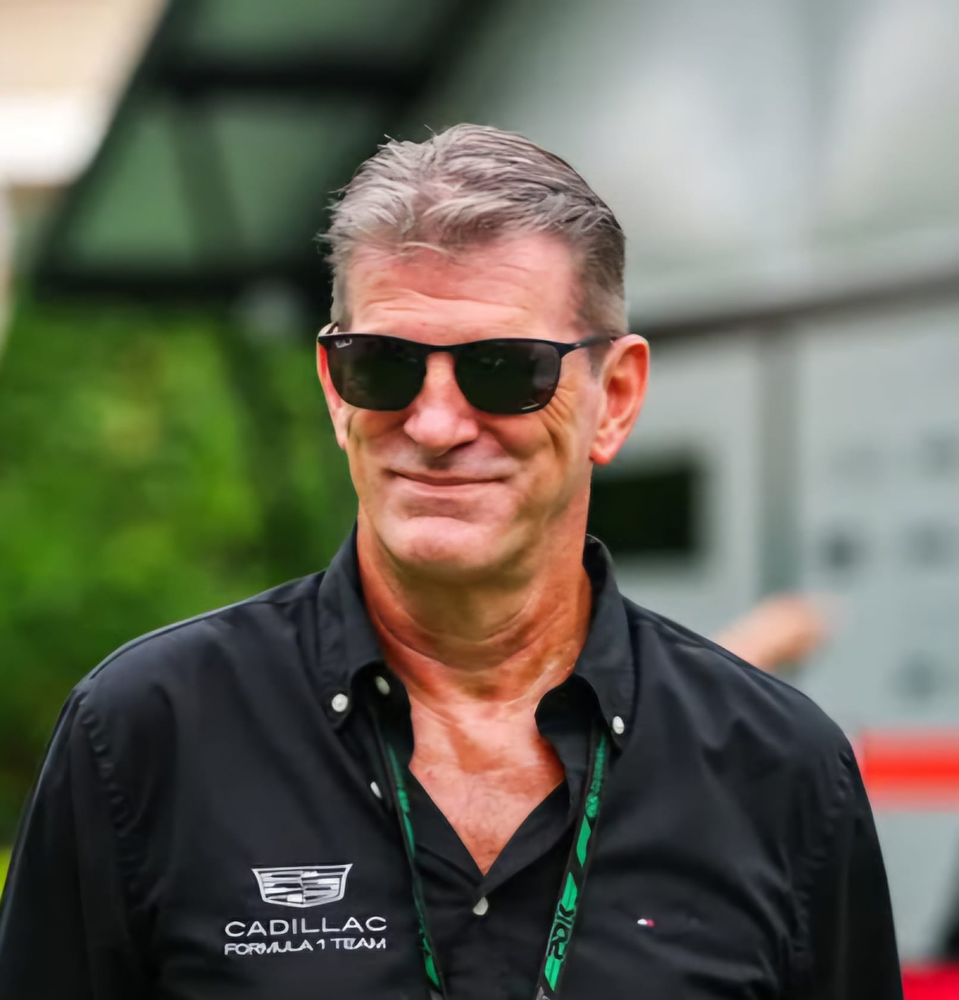

Graeme Lowdon
Graeme Lowdon
Team: Cadillac
Nationality: United Kingdom
Born: 1965
In charge since: 2025
History: Graeme Lowdon leads the new Cadillac Formula 1 Team, joining as Team Principal in December 2024 to prepare the American marque’s debut in 2026. He previously co-founded and managed Virgin Racing (later Marussia) from its 2010 entry until 2016. Lowdon’s experience in both business and motorsport management makes him ideal to guide Cadillac’s entry into Formula 1, combining American branding with technical operations based in Europe.
